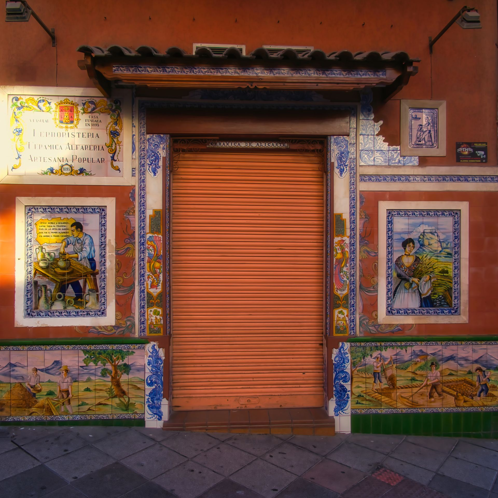
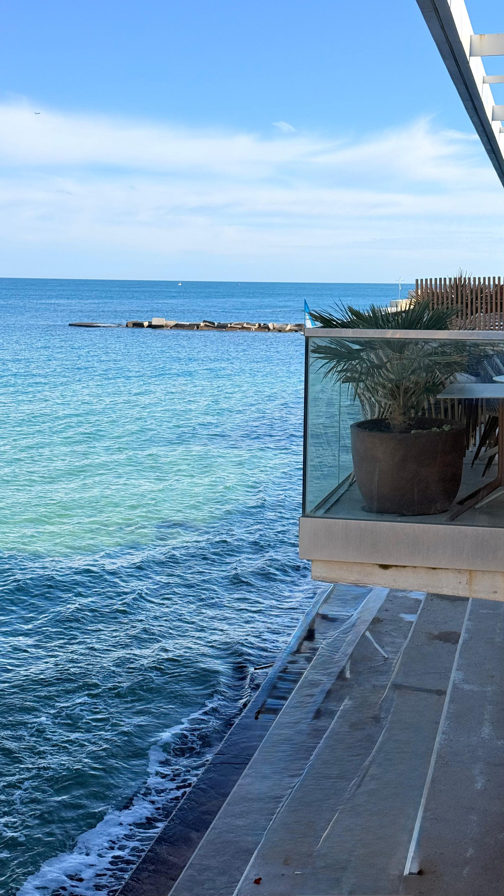

Specialists in the Costa Blanca microclimate
Cleaning windows in Benidorm isn't like doing it anywhere else. Our location exposes us to unique challenges that only a local company knows how to handle:
Mediterranean salt spray
The marine mist creates a whitish layer that corrodes the glass if not treated with the right products.
Sand from the Levante wind
The easterly wind drags particles that can scratch glass if cleaned with conventional techniques.
Intense sun
We clean using techniques that stop water from drying too soon, preventing droplet marks or "ghosts" on the glass.
We serve every district of Benidorm
No matter where your property or business is, our mobile units reach any point in the city:
Playa de Levante & Rincón de Loix
Specialists in glass for hotels and high-rise tourist apartments.
Playa de Poniente & Vía Parque
Services for new residential developments and modern skyscrapers.
Centre & Old Town
Fast, efficient cleaning for shops, boutiques and hospitality in pedestrian areas.
La Cala & Colonia Madrid
Maintenance for private homes, offices and homeowner communities.

What kind of cleaning do you need today?
As Benidorm's window cleaning benchmark, we offer tailored solutions:
For hospitality
Deep-clean plans for hotels preparing for peak season.
For skyscrapers
Technical teams for rope-access work on the city's most iconic towers.
For homes
Cleaning of enclosed terraces and large windows with sea views.
+30 years as your trusted neighbour
At Limpiezas Luz de Luna we are neither a franchise nor an external services platform. We are a family-run business from Benidorm. We know our clients by name and we understand the needs of property managers and local entrepreneurs. Our best advertising is the shine of the thousands of panes we've cleaned over these three decades.
Frequently asked questions from our Benidorm clients
Can you clean glass on pedestrian streets like Calle Gambo?
Yes — we have the necessary permits and adapt our schedules to clean before trading hours, respecting loading and unloading regulations.
Do you offer an urgent service after a calima?
We know muddy rain episodes are common in the area. We have a rapid service to restore your façade's image after a calima.
Bring back Benidorm's views through your windows
Don't let salt spray or dust cloud your day to day. Trust the local experts.